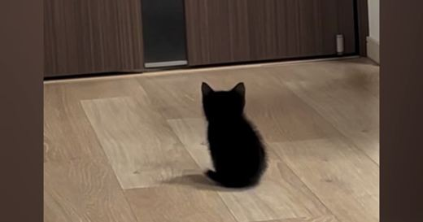
234万回雨の日にひとりぼっちで鳴いていた『赤ちゃん猫』を保護…1年間の『成長記録』が234万再生「立派になったね」「泣けてくる可愛さ」
Excite エキサイト · 07 Nov

234万回Excite エキサイト · 07 Nov
 200万回
NEW
200万回
NEW
Yahoo!ニュース · 07 Nov · @esumi_kurashi ♥18,134
 160万回
NEW
160万回
NEW
ねとらぼ · 07 Nov · @kaelimaeee ♥144,651
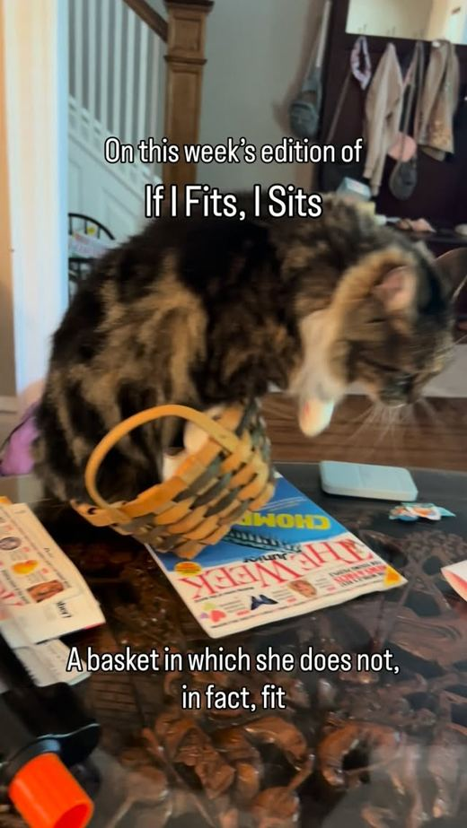
150万回 NEWねとらぼ · 08 Nov · @evie_is_fierce ♥102,190
ねとらぼ · 08 Nov · @ousen_chan ♥61,859
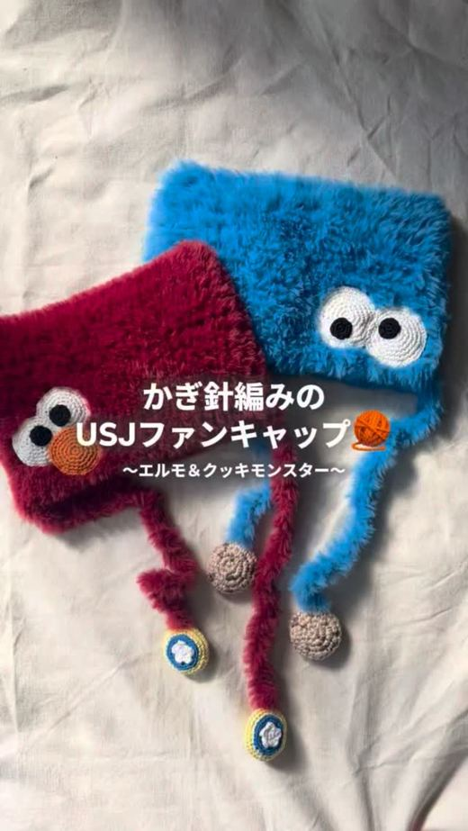
70万回 NEWねとらぼ · 07 Nov · @wataami_crochet ♥24,103
 57万回
57万回
ライブドアニュース · 07 Nov
Excite エキサイト · 07 Nov
 34万回
NEW
34万回
NEW
Excite エキサイト · 08 Nov
 30万回
NEW
30万回
NEW
Excite エキサイト · 08 Nov
千葉テレビ放送株式会社 · 08 Nov
 25万回
25万回
Excite エキサイト · 07 Nov
 11万回
11万回
LIMO | くらしとお金の経済メディア · 07 Nov
 11万回
11万回
Yahoo!ニュース · 07 Nov
Infoseek · 08 Nov · @aruchansenseinichijo ♥27,018
Yahoo!ニュース · 08 Nov
Sirabee · 08 Nov
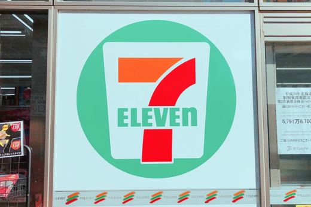
NEWBuzzFeed · 08 Nov
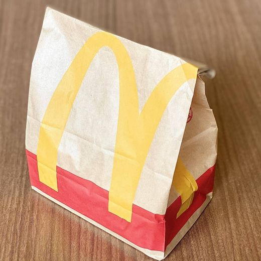
NEWTRILL · 08 Nov
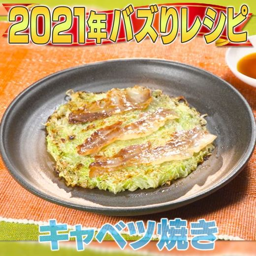
NEWヨムーノ · 08 Nov · @kajiyarou ♥23,426
Infoseek · 08 Nov
 NEW
NEW
東洋経済オンライン · 08 Nov
Infoseek · 08 Nov
ｄメニューニュース · 08 Nov
Hint-Pot | ヒントポット · 08 Nov
LIMO | くらしとお金の経済メディア · 08 Nov
ｄメニューニュース · 08 Nov
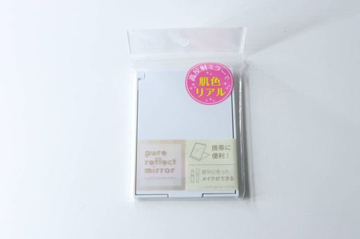
NEWExcite エキサイト · 08 Nov
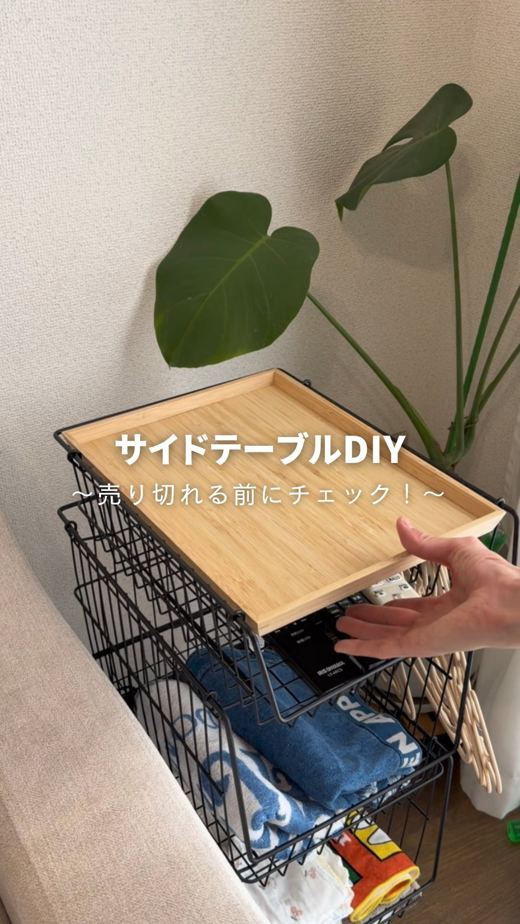
NEWニコニコニュース · 08 Nov · @yuu_kurashi_ ♥3,904

LIMO | くらしとお金の経済メディア · 07 Nov

ねとらぼ · 07 Nov
ヨムーノ · 07 Nov
ヨムーノ · 07 Nov
SRSホールディングス株式会社のプレスリリース 厚切りデジカルビとヤンニョムチキンの2種類が登場♪ M&Sフードサービス
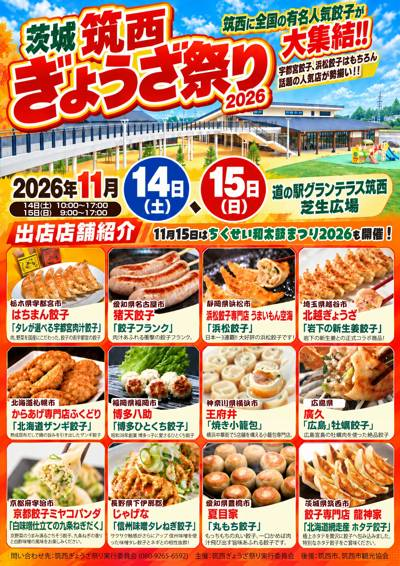
11/09 07:00 🚄 茨城一般社団法人餃子屋連盟會のプレスリリース 今週末、道の駅グランテラス筑西にて全国ぎょうざ祭りを初開催！全国から有名人気餃子店が大
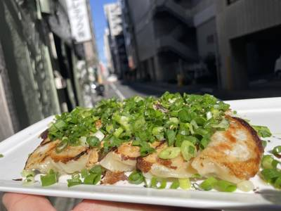
11/08 15:00 🗼 秋葉原吉野家HDグループ/株式会社シェアレストランのプレスリリース シェアレストランを利用した新規オープンのご案内 株式会社シェアレス
株式会社フロウカのプレスリリース 自社でのブース確保や渡航は不要。世界から26万人超が訪れる食品展示会に商品を展示し、海外バイヤ
SRSホールディングス株式会社のプレスリリース 創業79年、家族亭の「年越しそば」をネット注文なら対象商品が100円引きに 年越
有限会社船宿あみ達のプレスリリース 船名は社員公募で決定。屋上スカイデッキとカラオケを備え、食事も景色も楽しむ船上のひとときを
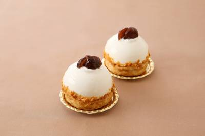
11/08 14:30 ❓ 不明パティスリー洛甘舎のプレスリリース 栗のお菓子が恋しくなる季節。京都のパティスリー洛甘舎から「バナナマロンパイ」をお届けします。
株式会社SAKIGAKEホールディングスのプレスリリース 「堺海山町店」のリニューアルオープンを記念し、すべてのラーメンを100
株式会社リカーマウンテンのプレスリリース リカーマウンテン各店では11/8(日)から「お歳暮セール」を開催いたします 全国に21
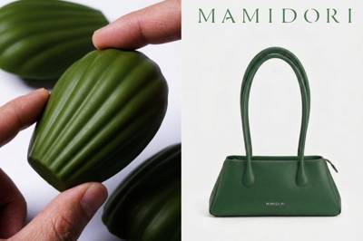
11/08 15:15 🚄 大阪合同会社firstfanのプレスリリース 前回イベントや催事出店好評により、11/28(土)に「MAMIDORI」のMAMIDO
 11/08 09:00
🗼 東京
11/08 09:00
🗼 東京
APAMAN株式会社のプレスリリース サンタやツリー、カルーセルなど10商品からお気に入りを選んで応募。購入・来場不要で11月3
株式会社 経営参謀のプレスリリース 「いい肉の日」に29ONの料理3品と飲み放題で乾杯。収益構造・会員設計・復帰の仕掛けなど、サ
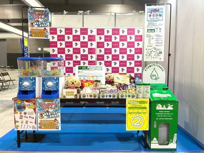
11/09 08:00 ❓ 不明株式会社アオキスーパーのプレスリリース 株式会社アオキスーパーは、11月７日・８日に愛知県国際展示場(Aichi Sky
株式会社 FS.shakeのプレスリリース 中野の海鮮居酒屋。あて巻き寿司・浜焼き・刺身に、2時間の食べ放題・飲み放題コースもあ
Not every angel can walk the VSFS runway, and that’s the whole trend. Creators are pairing this audio with the on-screen text “Not every angel can walk VSFS, some of us need to…” and finishing it with something way less glamorous (and way more relatable). It’s been all over our feeds since the show, and lowkey, we’re here for it.
“I just wanna make a lot of money and…” Now finish the sentence. Creators are setting Tate McRae’s “Housewife” over B-roll of their lifestyle, then revealing exactly how they’d spend the cash. It’s equal parts manifestation and mood board, and a great fit for lifestyle creators and brands selling an aspirational vibe.
音源: The Blue Danube Waltz – Royal Symphony Orchestra
Picture this: you’re in your PJs, doom-scrolling, and then, for absolutely no reason, you’re up and trying on a brand-new fit. This one’s giving fashion haul, but make it playful. Perfect for fashion and lifestyle creators (or brands) showing off their latest buys.